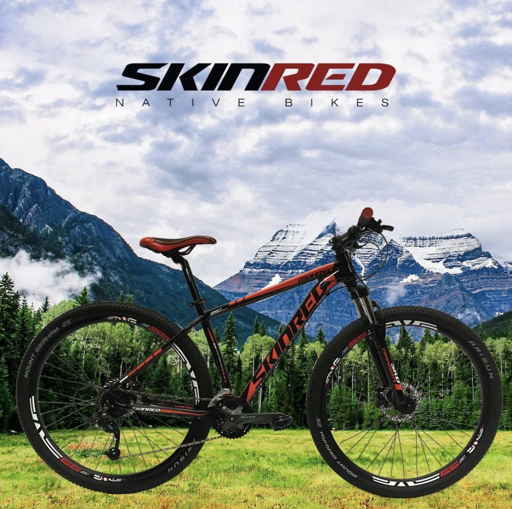
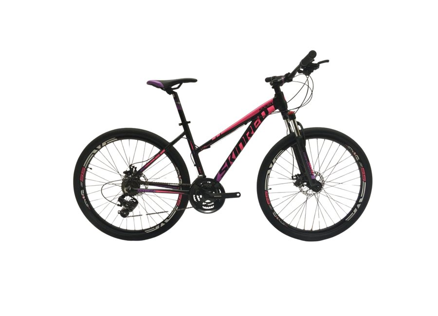

Rodado 27,5Serie Sioux Dama
Skin Red / Native Bikes
Hecha para
salir.
Una mirada a la Sioux: rodado 27,5, 21 velocidades y tres versiones para elegir tu próxima aventura.
Explorar modelosCOLECCIÓN SIOUX2026

NATIVE BIKES / LA MONTAÑA LLAMA21 velocidadesConfiguración del catálogo
Componentes ShimanoManija, plato, palanca y cambio
Talles 15 y 17Según ficha de producto
Selección de catálogo
Elegí tu
Sioux.
La misma línea en tres terminaciones. Fotografías, códigos y precios tomados del catálogo de septiembre 2026.
Precios de lista del catálogo de septiembre 2026, expresados sin IVA. Esta página es una maqueta de demostración; no confirma stock ni condiciones de venta.

SKIN RED / SIOUXUna línea, tres expresiones
Tu camino.
Tu versión.
La Sioux combina rodado 27,5 y 21 velocidades. En esta selección se presenta en blanco, negro brillante y negro mate.
- Rodado 27,5
- 21 velocidades
- Talles 15 y 17